无论是在数学还是艺术领域，19世纪上半叶都是从古典（或近代）进入现代的关键时期，走在最前列的依然是生性敏感的数学家和诗人。爱伦·坡和波德莱尔的相继出现，非欧几何学和非交换代数的接连问世，标志着以亚里士多德的《诗学》和欧几里得的《几何原本》为准则的延续了2000多年的古典时代的终结。可是，由于强大的惯性，分析时代的影响力犹在，并经历了严格化和精细化的过程，但分析似乎没有像代数和几何那样，出现里程碑式的转折点。
在分析人才辈出的法国，19世纪最主要的数学家是柯西。1789年夏，也就是巴黎人民攻占巴士底狱后一个多月，柯西出生在巴黎。柯西的父亲是一位文职官员，在拿破仑执政以后，成为新成立的上议院中管理印章和书写会议纪要的秘书，与拉普拉斯和拉格朗日交往颇多，因而柯西小时候就有机会接触这两位数学家。据说有一天，拉格朗日在老柯西的办公室里看到柯西写在草稿纸上的演算题，脱口说道，“瞧这孩子，将来我们这些可怜的数学家都会被他取而代之”。但拉格朗日也建议老柯西，鉴于柯西体质虚弱，在完成基本的教育之前不要让他攻读数学著作。
柯西从小喜欢文学，上大学后一度专攻古典文学，后来又立志成为军事工程师。16岁柯西考入巴黎综合理工学院，两年后进入土木工程专业。柯西毕业后被派往英吉利海峡边的瑟堡，为拿破仑军队入侵英国设计港口和防御工事，并利用业余时间研究数学。返回到巴黎后，拉普拉斯和拉格朗日都适时地劝说他投身数学领域，拿破仑政权的垮台也宣告他的工程师梦想破灭。27岁那年，他受聘成为巴黎综合理工学院的数学和力学教授，并替补因追随拿破仑而被放逐的蒙日成为法兰西科学院院士。此后，除因拒绝宣誓效忠新国王而在国外旅居数年以外，他的生活十分安定。
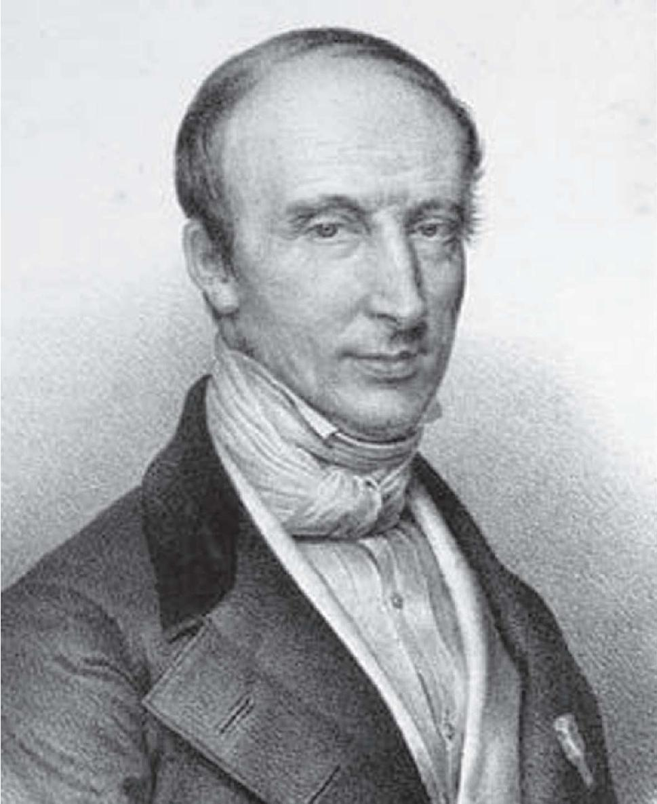
弃文从工后又投理的柯西
柯西把自己在分析方面的许多成果都写进了巴黎综合理工学院的讲义，这些以严格化为目的的教材内容包括变量、函数、极限、连续性、导数和微分等微积分学的基本概念。例如，他率先把导数定义为下列差商
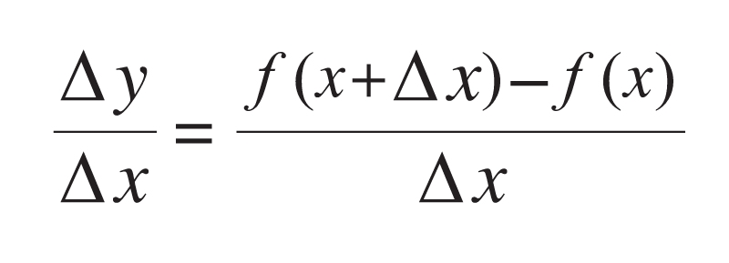
在△x无限趋近零时的极限，并把函数的微分定义为dy=f'（x）dx。柯西还对数列和无穷级数的极限进行了严格化处理，建立了“柯西收敛准则”。这个准则对数列的情形表述如下：
数列xn收敛的充分必要条件是：对于任意给定的ε>0，存在正整数N，当m>N，n>N时，就有
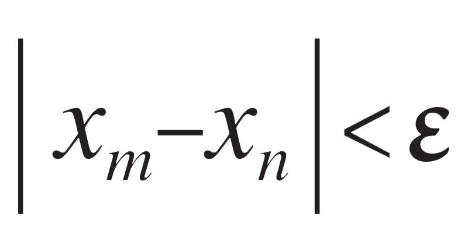
。此外，微分学中的“柯西中值定理”是上一章谈及的拉格朗日中值定理的推广。“微积分基本定理”也是由柯西严格表述并证明的：设f（x）是[a，b]上的连续函数，对于[a，b]上的任意一点x，由
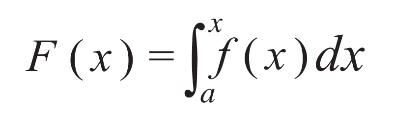
定义的函数F（x）就是f（x）的原函数，即F'（x）=f（x）。
柯西给出的许多定义和论述基本上已是微积分的现代形式，这是向分析严格化迈出的关键一步。据说他在法兰西科学院展示有关级数收敛性的论文时，台下年事已高的拉普拉斯惊呆了。会后拉普拉斯急急忙忙地赶回家里，从书架上取下《天体力学》，用柯西提供的准则检查里面的级数，直到证明它们全都收敛才放下心来。尽管如此，柯西的理论还是存在漏洞，只能算作比较严格。例如，柯西经常用到“无限趋近”、“想要多小就有多小”等直觉性表述，而在证明作为和式极限的连续函数的积分存在性等问题时需要实数的完备性。
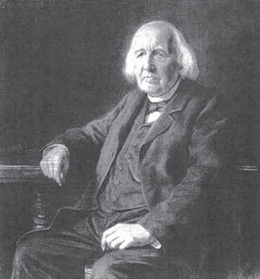
中学老师出身的数学大师魏尔斯特拉斯
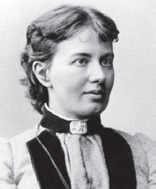
俄国数学家柯瓦列夫斯卡娅
此时，法国在分析研究方面后继乏人，而德国有个中学数学老师接过了接力棒，他就是魏尔斯特拉斯（K.Weierstrass，1815—1897）。就在拿破仑遭遇滑铁卢那年，魏尔斯特拉斯出生在德国西部的威斯特法伦。他年轻时选错了职业，在法律和财经研究上浪费了不少时间，26岁以后又在故乡及邻近的几所中学里默默无闻地过了15年，教数学也教物理学、植物学和体育。直到1857年即柯西去世那年，42岁的他才刚当上柏林大学的助理教授。虽说魏尔斯特拉斯与小他35岁的俄国女数学家柯瓦列夫斯卡娅（偏微分方程解的存在唯一性问题被称为柯西—柯瓦列夫斯卡娅定理）有着非比寻常的友谊，但他却和他的三个弟弟妹妹一样终生未婚。
说到柯瓦列夫斯卡娅（S.Kovalevskaya，1850—1891），她是一位传奇的美丽女子。她出生于莫斯科，父亲是一位将军，母亲是德国人的后裔。那时，俄国不准女子出国留学，就像印度的婆罗门青年甘地（M.K.Gandhi，1869—1948）曾遭遇的那样，柯瓦列夫斯卡娅不得已通过与一位学生物学的大学生柯瓦列夫斯基假结婚从而迁居德国。起初，柯瓦列夫斯基在海德堡大学师从德国物理学家赫姆霍兹（H.L.Helmholtz，1821—1894，能量守恒定律的发现者），后又到柏林请魏尔斯特拉斯担任她的私人教师。1874年，她以一篇关于偏微分方程的论文在无须答辩的情况下获得哥廷根大学的博士学位，成为数学史上的第一个女博士，导师是魏尔斯特拉斯。1888年，她匿名投寄一篇关于刚性物体绕固定点旋转的论文给法兰西科学院并获得大奖，同年被数学家切比雪夫（1821—1894）等人推荐当选俄国科学院通讯院士，成为历史上的第一个女院士。她死后出版的小说《童年的回忆》（1893）描写了其早年在俄国的生活，曾广为流传。
在那个年代，由于人们对实数系缺乏认识，因而存在一个普遍的错误，就是认为所有连续函数都是可微的。但是，魏尔斯特拉斯举出一个处处连续却处处不可微的函数，震惊了数学界。这个例子是：
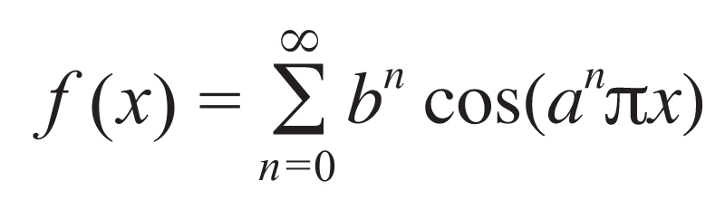
其中a是奇数，b∈(0,1)，ab>1+
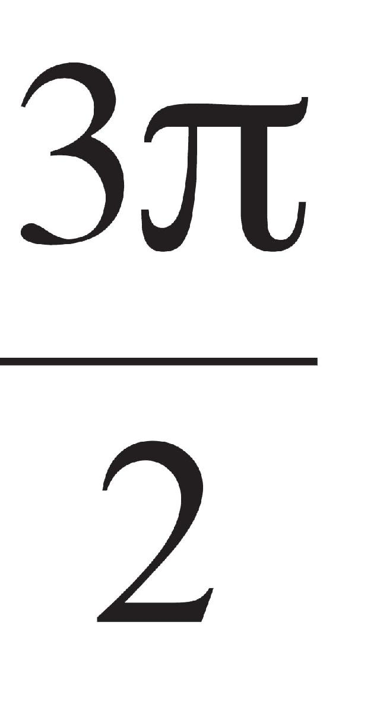
。从那以后，魏尔斯特拉斯创立了我们今天熟知的“ε–δ语言”，来代替柯西的“无限趋近”，并给出了实数的第一个严格定义，他也因此被誉为“现代分析之父”。魏尔斯特拉斯先从自然数出发定义有理数，再通过无穷多个有理数的集合来定义实数，然后通过实数建立起极限和连续性等概念。后来，他的同胞戴德金（R.Dedekind，1831—1916）和G.康托尔（Georg Cantor，1845—1918）分别从有理数的分割和极限重新定义实数，并借此证明了实数的完备性。G.康托尔本是在俄国圣彼得堡出生的丹麦人，后来移民成为德国人，他以创立集合论闻名。G.康托尔是魏尔斯特拉斯的学生，他和戴德金（高斯的学生）虽然是竞争者，但却相互影响和鼓励，并一直保持着通信联系。
就在拿破仑在圣赫勒拿岛去世的那年，即1821年，在欧洲大陆的最北端，19岁的挪威青年阿贝尔进入了奥斯陆大学。三年以后，他自费发表了一篇论文《论一般五次代数方程之不可解性》，其中证明了以下结果：如果一个多项式的次数不少于五次，那么任何由它的系数组成的根式都不可能是该方程的根。这个结果的意义非常重大，自从中世纪的阿拉伯数学家将二次方程理论系统化，文艺复兴时期的意大利数学家通过公开辩论解决了三次和四次方程的求解问题，200多年来数学家们渴望破解的就是五次和五次以上方程的根。
阿贝尔出生在挪威的西南城市斯塔万格附近的芬岛，是穷牧师的儿子，有7个兄弟姐妹。挪威如今已是欧洲最富裕的国家之一，但那时候经济状况十分糟糕，没有出过一个有名的科学家。所幸，阿贝尔在教会学校遇到一位优秀的数学老师，让他在少年时代便有机会阅读欧拉、拉格朗日和高斯的著作。他自认为找到了五次方程的解法，但当时挪威无人可以判断其对错，于是他把文章寄到了丹麦。然而，丹麦人也没看出对错，只是让阿贝尔给出更多的例子。之后他自己发现了问题，便把注意力转向否定方面，最终取得了成功，那时他已是奥斯陆大学的学生了。
阿贝尔有了知名度之后，决定向政府申请一笔旅费，准备去德国和法国游学，但被要求先在挪威学好德语和法语。23岁那年，刚刚大学毕业的阿贝尔踏上了游学之旅，他先是来到柏林，在那里结交了一位出版家朋友，后者在他的《纯粹数学与应用数学杂志》（也叫《克雷尔杂志》）创刊号上发表了阿贝尔的7篇论文，其中包括五次方程之不可解性证明，这也是目前仍在发行的最古老的数学杂志。与此同时，阿贝尔了解到，包括高斯在内的那些收到他论文的数学家均没有认真阅读，于是痛苦地绕过哥廷根，去了巴黎。同样，柯西和其他法国数学家也漠视了阿贝尔的工作。
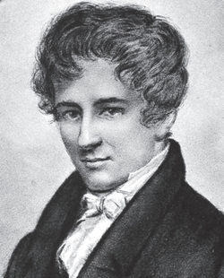
英年早逝的数学天才阿贝尔
等到两年后回到挪威时，阿贝尔已经染上肺结核，贫困交迫，仅依靠做家庭教师和朋友的资助维持生计。直到这时，才有一些欧洲同行认识到他的工作价值：五次方程之不可解性证明只是其中的一小部分，阿贝尔定理奠定了代数函数的积分理论和阿贝尔函数方程的基础，阿贝尔方程群大大推进了椭圆函数的研究。椭圆函数作为双周期的亚纯函数，最初是从求椭圆弧长衍生出来的。椭圆函数论可以说是复变函数论在19世纪最光辉的成就之一，不过德国数学家雅可比（C.Jacobi，1804—1851）也独立做到了。1929年春，经过那位出版家朋友的努力，柏林大学终于为阿贝尔提供了教授职位，但就在聘书寄达奥斯陆的两天前，阿贝尔不幸去世了。
阿贝尔死后不久，数学界逐渐意识到他工作的重要性，如今他被公认为近代数学发展的先驱和19世纪最伟大的数学家之一，就连最高面值的挪威克朗纸币上也印有他的肖像。阿贝尔可能是第一个扬名世界的挪威人，他取得的举世瞩目的成就激发了其同胞们的才智。阿贝尔去世的头一年，挪威诞生了伟大的戏剧家易卜生（H.Ibsen，1828—1906），接下来还有作曲家格里格（E.Grieg，1843—1907）、艺术家蒙克（E.Munch，1863—1944）和探险家阿蒙森（R.Amundsen，1872—1928），每一位都蜚声世界。其中阿蒙森是世界上第一个到达南极的人，他所使用的交通工具是狗拉雪橇。
阿贝尔在否定五次或五次以上方程存在一般解的同时，也考虑了一些特殊的能用根式求解的方程，其中一类是“阿贝尔函数方程”。在这项工作中，他实际上引进了抽象代数中“域”的概念。在18世纪的最后一年，高斯在他的博士论文中率先证明了n次代数方程恰好有n个根（代数基本定理），给了数学家们以信心。在阿贝尔的工作之后，他们面临着这样一个问题：什么样的方程可以用根式来求解？这个问题将由另一位英年早逝的天才伽罗华来回答，他在阿贝尔去世后的两年时间里，迅速建立起判别方程根是可解的充分必要条件。
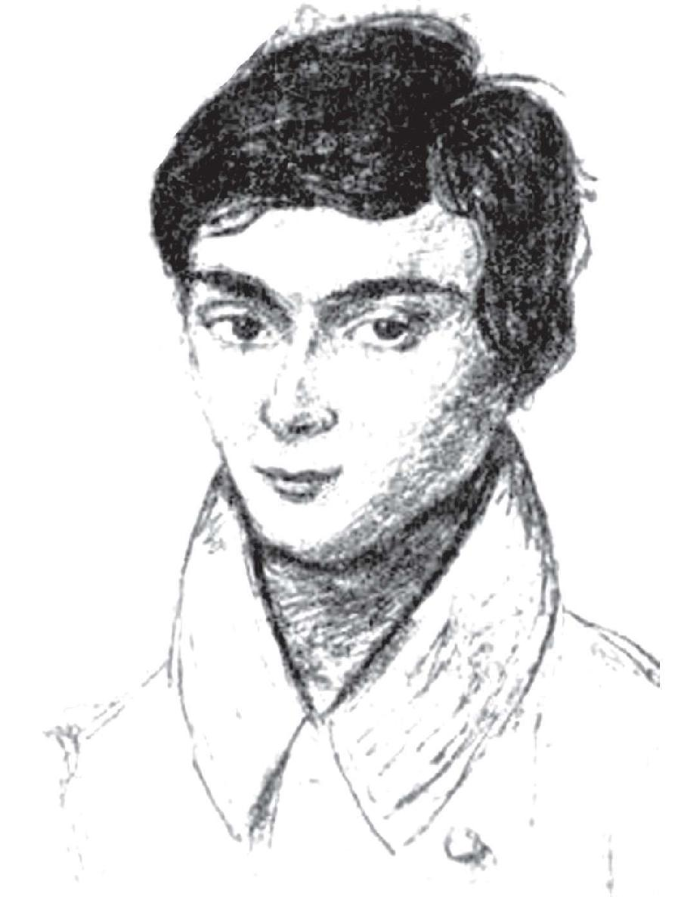
数学界的“兰波”——伽罗华
伽罗华的思想是将一个n次方程的n个根作为一个整体来考察，并研究它们之间的重新排列（置换）。举例来说，设四次方程的4个根为x1，x2，x3，x4，则将x1和x2交换就可得到一个置换
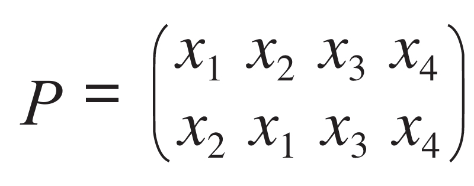
把连续实行两次置换后得到的一个新置换定义为这两个置换的乘积，所有可能的置换构成一个集合（这个例子里共有4!=24个元素）。这种乘法是封闭的（相乘后仍在其中），满足结合律：（P1P2）P3=P1（P2P3），且存在单位元素（恒等置换）和逆元素（相乘以后为恒等元素）。
满足上述条件的集合叫群（如果乘法还满足交换律则称为交换群或阿贝尔群），上述实例叫置换群。伽罗华考虑了方程根的置换群中某些置换组成的子群（拥有群的性质的子集合），它们必须满足一定的代数法则，这样的群现在被称为“伽罗华群”。以四次方程x4+px2+q=0为例，它的4个根分成互为正负的两对，即x1+x2=0，x3+x4=0，其伽罗华群中的置换在域F中也满足上述两个等式，在这里F是p和q的有理表达式形成的域。可以验证，上述伽罗华群仅有8个元素（置换）。最关键的是，伽罗华证明了只在伽罗华群是可解群时，方程才是根式可解的。事实上，对于伽罗华群，只在它的阶数n=1、2、3或4时，才是任意可解的。
1811年秋，伽罗华出生在巴黎南郊一个叫拉赖因堡的小镇，家境原本优裕。他的父亲积极参加法国大革命，当拿破仑从流放地厄尔巴岛返回巴黎再次执掌政权（史称回光返照的“百日政变”）时，甚至被选为镇长。伽罗华从小接受了良好的教育，但他18岁时，父亲因遭人诬陷愤而自杀，他本人报考巴黎综合理工学院未果（可能是因为未通过面试），后来进了巴黎高等师范学院，次年却因为参加反对波旁王朝的运动而被校方开除，不久又被当局抓捕并判刑。获释后伽罗华又谈了一场愚蠢的恋爱，并因为情人决斗而死，那是在1832年春，当时他年仅20岁。伽罗华死后被葬在故乡的公墓里，具体位置无人知晓。
和阿贝尔一样，伽罗华在读中学时遇到了一位好的数学老师，把他带入奇妙的数学世界。很快，他就抛开教科书，直接阅读拉格朗日、欧拉、高斯和柯西等数学家的原作，并构造出群的概念。伽罗华人在巴黎，又在名校读书，本可以避免像阿贝尔那样英年早逝的悲剧命运。不料，他递交给法兰西科学院的三篇论文也被柯西等数学家忽视或遗失，幸好他在参加决斗的前夜预感到自己的结局，以给一个朋友写信的形式留下了遗嘱，再加上其他手稿，给后世的数学家留下了珍贵的遗产。但是，伽罗华生前只发表了一篇短文，死后人们能收集到的他的文稿也仅有60页。
伽罗华的工作开启了近世代数的研究，不仅解决了方程可解性这个300多年的数学难题，更重要的是，包括运算对象在内的群的概念（与元素的对象无关，置换群只是其特例）的引进，推动了代数学在对象、内容和方法上的深刻变革。随着数学和自然科学的发展，群的应用越来越广泛，从晶体结构到基本粒子、量子力学，等等。1900年，普林斯顿大学的一位物理学家在与一位数学家讨论课程设置时说，群论无疑可被删除，因为它对物理学没有任何用处。可是没过20年，就有三本有关群论与量子力学的专著出版了。与此同时，我们也看到阿贝尔和伽罗华等人的工作促使代数学家把注意力从解方程中解放出来，转而投到数学内部的发展和革新上。
值得一提的是，比伽罗华早两年出生的法国人刘维尔（J.Liouville，1809—1882）也是一位数学天才。刘维尔16岁进入巴黎综合理工学院，后留校做助教，是代数数的有理逼近和超越数论的奠基者。“代数数”和“超越数”是这样定义的：如果一个复数是某个整系数多项式方程的根，它就是代数数，否则就是超越数。超越数的概念最早出现在欧拉的著作《无穷分析引论》（1748）中。1844年，刘维尔首先证明了超越数的存在性，他通过无穷级数构造了无数个超越数。特别地，下列无穷小数是超越数
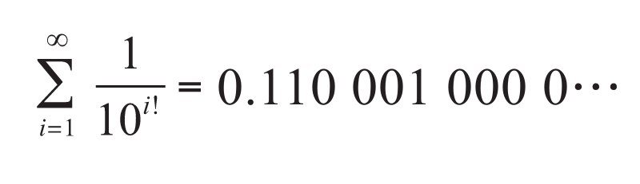
这个数被称为“刘维尔数”，这是人类对数的一次认识上的飞跃。1873年，法国数学家埃尔米特（C.Hermitian，1822—1901）证明了自然对数的底e=2.7182818…是超越数。1882年，德国数学家林德曼（F.Lindermann，1852—1939）证明了圆周率π是超越数。值得一提的是，林德曼的博士生导师是F.克莱因，林德曼执教哥尼斯堡大学期间，指导希尔伯特和闵可夫斯基在同一年获得了博士学位，正是这三位与林德曼存在师生关系的人创立了数学领域的哥廷根学派。
可是，我们至今不知道e+π是不是超越数，甚至不知道它是不是无理数。同样，欧拉常数
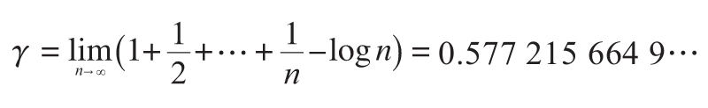
是不是有理数也未见分晓。
在伽罗华提出群的概念之后，代数学领域接下来的一个重大发现是四元数。这是历史上第一次出现不满足乘法交换律的数系，虽然四元数本身的作用与伽罗华的群理论或阿贝尔的椭圆函数无法相提并论，但对于代数学的发展来说却是革命性的。自牛顿去世以后，法国和德国的数学家们始终占据着欧洲的数学舞台，现在终于轮到说英语的人扬眉吐气了，那便是神奇的哈密尔顿。虽说哈密尔顿是爱尔兰人，住在离伦敦400多公里的都柏林，可是在整个19世纪，大不列颠和爱尔兰在名义上是一个国家。
1805年，哈密尔顿出生在都柏林的一个律师家庭，他的母亲很有智慧。可是，他的父母或许预见到了未来的不测，就把小哈密尔顿送到乡下，寄养在他的当牧师的叔叔家里。这位叔叔是一个语言怪才，哈密尔顿又是一个神童，在他13岁那年，已经能够流利地讲13种语言了，包括拉丁语、希伯来语、阿拉伯语、波斯语、梵语、孟加拉语、马来语、兴都斯坦语、古叙利亚语。正当哈密尔顿准备学汉语时，他的父母却双双离世。15岁那年，都柏林来了一个擅长速算的美国神童，比哈密尔顿还年轻一岁，他把哈密尔顿引入另一个世界。
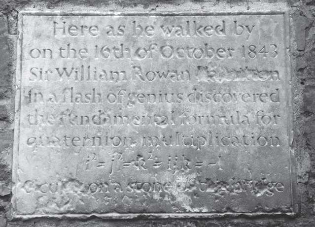
都柏林布鲁姆桥上的碑石，上面写着哈密尔顿散步到此发现了四元数
通过自学，哈密尔顿迅速掌握了解析几何和微积分，他阅读牛顿的《自然哲学的数学原理》和拉普拉斯的《天体力学》，并指出后者中的一个数学错误，引起了人们的注意。第二年，从没有上过学的哈密尔顿以第一名的成绩考进了都柏林三一学院。等到他从大学毕业时，已经建立起几何光学这个新学科，并毫无异议地被母校聘任为天文学教授，还获得了“爱尔兰皇家天文学家”的称号，那时他尚不满22岁。他的前途与阿贝尔和伽罗华完全不同，30岁那年哈密尔顿被封爵士，两年后又被任命为爱尔兰皇家科学院院长。
虽说哈密尔顿生前以物理学家和天文学家的身份闻名，但他本人最倾心且投入精力最多的却是数学，然而出于各种原因，他在这方面的成绩来得晚了一些。19世纪初，高斯等人分别给出了复数a+bi的几何表示。不久，数学家们意识到，复数能用来表示和研究平面上的向量。尤其是在物理学领域，因为力、速度和加速度这些既有大小又有方向的量都是向量，这些向量符合平行四边形法则，两个复数相加的结果正好也符合这一法则。
用复数来表示向量及其运算有一个很大的便利之处，就是无须通过几何作图就可以用代数方法研究它们。但是，人们很快又遇到了新的问题，复数的用途是有限制的。由于几个力对物体的作用不一定在同一个平面上，这样一来就需要复数的三维形式，人们可能会自然而然地想到用笛卡尔坐标系（x，y，z）来表示从原点到该点的向量。遗憾的是，不存在三元数组的运算来对应向量的运算。摆在哈密尔顿面前的光荣而艰巨的任务是，让复数可进行上述运算。
1837年，哈密尔顿发表了一篇文章，第一次指出复数a+bi中加号的使用只是历史的偶然，复数可用有序偶（a，b）表示。他给这种有序偶定义了加法和乘法运算法则，即
（a，b）+（c，d）=（a+c，b+d），
（a，b）×（c，d）=（ac–bd，ad+bc）
同时，他还证明了这两种运算是封闭的，并满足交换律和结合律。这是哈密尔顿迈出的第一步，接下来，他想把这种有序偶推广到任意元数组中，使之具备实数和复数的基本性质。经过长期的努力，他发现所要找的新数至少有4个分量，此外，还必须放弃自古以来数的乘法都满足的交换律。他把这种新数命名为四元数。
四元数的一般形式为a+bi+cj+dk，其中a、b、c、d为实数，i、j、k满足i2=j2=k2=–1，ij=–ji=k，jk=–kj=i，ki=–ki=j。这样一来，任何两个四元数都可以按上述规则相乘，例如设p=1+2i+3j+4k，q=4+3i+2j+k，则
pq=–12+6i+24j+12k，qp=–12+16i+4j+22k
虽然pq≠qp，但结合律却成立，哈密尔顿亲自验证并第一次使用了四元数这个词。哈密尔顿做出这个发现是在1843年，他开启了代数学的一扇大门，从此以后，数学家们可以更加自由地建立新的数系。
必须指出的是，哈密尔顿的四元数虽然具有重大的数学意义，但却不适用于物理学。德国、英国和美国的多位数学家经过共同努力，把四元数定义中的第一项和后三项分开，让后三项组成一个向量，同时重新定义i、j、k之间的两种运算——点积和叉积，即今天我们在空间解析几何里学到的向量运算或向量分析，它在物理学领域有着广泛的应用。此外，还出现了更一般的有序n元数组，那是德国数学家格拉斯曼（H.Grassmann，1809—1877）于1844年给出的。矩阵也成为独立的研究对象，它不仅用途极广，而且与四元数一样不满足乘法交换律。
遗憾的是，四元数理论后来也与某些数学发现一样，成为“数学史上一件有趣的古董”，而哈密尔顿晚年却错误地以为它是解开宇宙秘密的关键，以及它对于19世纪的重要性就像牛顿的流数术之于17世纪。事实上，四元数理论诞生以后就完成了它的历史使命，哈密尔顿却把他人生的最后20年全部投入这个理论的推演，这对像他那样的伟大数学家无疑是一个悲剧。当时在大西洋彼岸数学欠发达的美国，四元数理论的确风靡一时，新成立的美国科学院的院士们还把哈密尔顿推选为他们的第一位外籍院士。
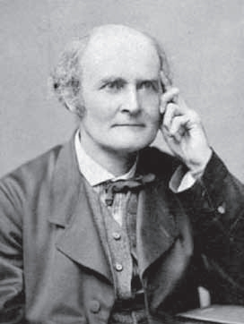
英国历史上最多产的数学家凯莱
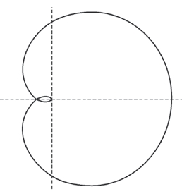
凯莱的蚌线
在哈密尔顿去世的8年前（1857），英国数学家凯莱（A.Cayley，1821—1895）从线性变换中提取出矩阵的概念及运算法则。他发现矩阵的加法满足交换律和结合律，乘法仅满足结合律和对加法的分配律，但与四元数一样不满足交换律。例如
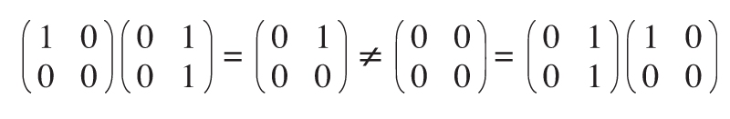
矩阵理论的重要性当然无须多说，正是依赖这个新概念，哈密尔顿的名字才走出数学史，在今天的高等代数课程里留下了永久的印记，即所谓的哈密尔顿—凯莱定理：
设A是数域P上的一个n阶方阵，
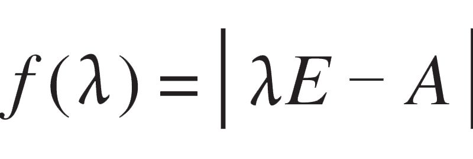
（行列式）是A的特征多项式，则f（A）=0（零矩阵）。1925年，物理学家玻恩（M.Born，1882—1970）和海森堡发现，最能表达他们新思想的恰好是矩阵代数，即某些物理量可以用不能交换的代数对象表示，从而产生了著名的“测不准原理”。值得一提的是，矩阵（matrix）这个词是由凯莱的合作者、英国数学家西尔维斯特（J.J.Sylvester，1814—1897）命名的。凯莱还率先引入了n维空间的概念，详细讨论了四维空间的性质，他和西尔维斯特共同建立了代数不变量理论，在量子力学和相对论的创立过程中发挥了作用。同样值得一提的是，凯莱也是促使剑桥大学招收女大学生的主要推动者，西尔维斯特有一段时间在美国执教，成为新大陆开拓数学事业的先驱。
凯莱的父亲是一位在圣彼得堡经商的英国人，母亲有俄国血统。在他的父母回乡探亲期间，凯莱出生在英国，但他的童年在俄国度过。可以想象，凯莱的父亲反对儿子以数学为职业，但最终被中学校长说服，后来凯莱成为英国历史上最多产的数学家，和哈密尔顿、西尔维斯特一起开创了继牛顿之后英国数学的又一个辉煌时期。有意思的是，在成为举世公认的数学家之前，凯莱和西尔维斯特都做过一段时间的开业律师。凯莱作为财产转让方面的律师长达14年，过着富裕的生活，但始终没有中断数学研究。这不由得让人联想到美国现代诗人斯蒂文斯（W.Stevens，1879—1955），他长期担任一家保险公司的副总裁。